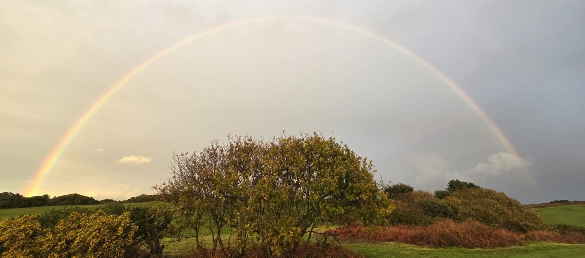

For a private commission — a course closed for a morning, arrival by air — see By Arrangement.

For US Visitors · Travel Tips
Most American golfers planning a trip to England assume they'll rent a car at the airport and drive themselves between courses. It's what you'd do at home. It makes sense on paper. And for many trips in many countries, it's the right call.
For a golf vacation on England's east coast, it rarely is. Here's an honest look at why — and what a private luxury transfer actually adds to the experience.
The basics are manageable: you need an International Driving Permit alongside your US license, and your rental agreement needs to specifically permit driving in the UK. Neither is a deal-breaker.
The reality of driving in Norfolk and Suffolk is more nuanced. The roads between the great courses here — from Brancaster down through Hunstanton, across to Cromer, south to the Suffolk heathland clubs — run largely on narrow country lanes, often without road markings, with passing places rather than two lanes. Driving on the left is one adjustment; navigating a single-track lane with a hedge on each side and a tractor coming the other way is another.
None of this is insurmountable. But it does mean that a significant part of your mental energy on travel days goes on road navigation rather than the golf you came to play. For most of our guests, that's not the trade-off they want on a trip they've planned for months.
Golf bags are large. A typical rental car in the UK — even a relatively spacious saloon — will accommodate two bags at a push, not four. Most rental companies in this country don't offer estate cars or SUVs as standard, and the ones that do carry a premium that often closes the cost gap with a private transfer more than people expect.
A private transfer vehicle is sized and configured for golf. Bags are loaded and unloaded cleanly, clubs are secured properly, and nobody is rearranging luggage in a car park to make things fit. It sounds like a minor detail. After a long travel day or a four-hour round in the Norfolk wind, it isn't.
Royal West Norfolk at Brancaster is the most dramatic illustration of this. Tee times here are dictated by the tide — the causeway that gives access to the course floods twice daily, which means your arrival window is fixed, and missing it means missing your round. There is no flexibility and no second chance.
A private transfer with a driver who knows the route, knows the tide table, and has been here before removes that variable entirely. It's the difference between a round you've been looking forward to for months happening as planned, or not happening at all.
The same principle applies across the region. Course tee times are set; rural driving with an unfamiliar vehicle on unfamiliar roads introduces unpredictability that a professional driver simply doesn't. Our guests consistently arrive on time, relaxed, and ready to play.
The drive from London to north Norfolk through the Fens and the Cambridge countryside is genuinely beautiful. The coastal road along the north Norfolk coast — through Burnham Market, Holkham, Wells-next-the-Sea — is one of the finest short drives in England. Between the Suffolk heathland courses, you pass through Aldeburgh, Snape Maltings, and some of the most unspoilt coastline in the country.
These are things you notice and appreciate from the back of a comfortable vehicle with a knowledgeable driver. They're considerably harder to take in when you're concentrating on remembering to stay left at a roundabout.
The journey begins at the airport. Heathrow to north Norfolk at peak times is a two-and-a-half to three-hour drive. After a transatlantic flight, navigating an unfamiliar rental car from one of the world's busiest airports, through London traffic, onto unfamiliar motorways, is nobody's idea of the ideal start to a golf vacation.
A private meet-and-greet transfer — driver waiting at arrivals, bags handled, vehicle waiting — costs less than most people assume and sets a tone for the trip that a budget rental counter queue simply doesn't. First impressions matter, and the first few hours after a long flight either work for you or against the rest of the trip.
"Our guests consistently tell us the transfer is the detail they didn't know they needed — and the one they mention first when they recommend us to someone else."
All transfers booked through Golf East Anglia are private — your group only, no shared shuttles — and handled by professional, experienced drivers who know the region and the courses. Vehicles are luxury-standard and properly sized for golf bags. We handle all logistics, timing and routing, and transfers can be booked as part of a full itinerary package or on a standalone basis for airport arrivals and departures.
For a multi-day trip, a full chauffeur service — driver available for all course transfers throughout your stay — is also available and is the option most of our groups travelling from the US choose. It removes every logistics question from the trip and lets everyone in the group arrive at each course having thought only about golf.
Tell us your arrival airport, dates and group size. We'll build transfers into your itinerary or quote for airport transfers on a standalone basis.
View our transfers